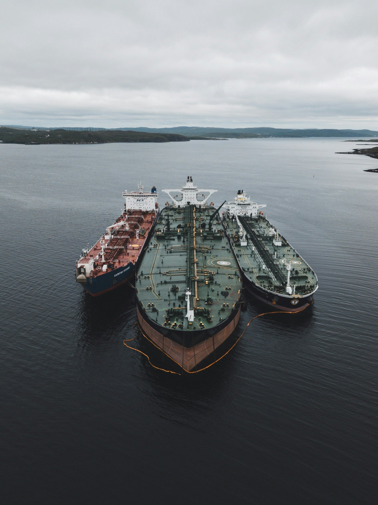

ByEirini Diamantara&Dimitris Roumeliotis
Global crude oil trade during the first half of 2026 presents a market shaped less by uniform growth and more by a significant redistribution of supply. Based on Signal Ocean data, between February and July, global crude loadings reached approximately 1.05 billion mt, down 7.4% from 1.13 billion mt during the same period of 2025. Although this decline is substantial in absolute terms, the more important development is the changing composition of exports, as reduced Middle Eastern volumes were partly offset by stronger shipments from Russia, the United States, Brazil, Venezuela and the United Arab Emirates. The result is a crude market that is becoming increasingly diversified geographically, with potentially important consequences for tanker demand and tonne-mile utilisation. Russia emerged as the world’s largest crude exporter during the February–July period, loading 130.89 million mt, up 7.6% year-on-year. Monthly volumes remained consistently strong, although they eased slightly from 24.13 million mt in May to 22.89 million mt in July. Saudi Arabia, by contrast, recorded one of the sharpest declines among major exporters, with loadings falling by 23.2% to 114.64 million mt. Nevertheless, the most recent monthly data suggest some recovery, as Saudi exports increased steadily from 15.78 million mt in May to 18.94 million mt in July. This improvement indicates that part of the earlier disruption may be normalising, even though cumulative volumes remain well below last year. The United Arab Emirates demonstrated the strongest short-term momentum. UAE exports nearly doubled from 10.38 million mt in May to 21.06 million mt in July, placing the country second globally during the month. This growth helped offset the severe contraction from other Arabian Gulf suppliers. Iraq’s exports declined by 70.1% year-on-year, Kuwait’s by 79.3% and Iran’s by 47%, removing all three countries from the top ten exporters in 2026. Their decline highlights the extent to which geopolitical risk and operational constraints have altered traditional Gulf supply patterns. The Atlantic Basin has become an increasingly important source of replacement barrels. US exports rose by 19.6% year-on-year to 106.98 million mt, while Brazil increased shipments by 12.3% to 60.28 million mt. However, US monthly loadings fell sharply from 22.46 million mt in May to 13.80 million mt in July, a decline of almost 39%, suggesting that recent export strength may not continue at the same pace. Brazil has shown a more stable profile, with volumes gradually rising from 10.10 million mt in May to 10.77 million mt in July. Venezuela also recorded a notable recovery, more than doubling its exports year-on-year to 29.53 million mt.
For the tanker market, the reduction in headline volumes was not necessarily translated into proportionally weaker demand. Replacement barrels from the United States, Brazil, Russia and Venezuela, involved longer voyages than traditional Middle Eastern exports, particularly when directed towards Asian buyers. This shift has increased tonne-mile requirements even when total cargo volumes have declined. At the same time, the changing balance between Gulf and Atlantic Basin supply supports demand across several vessel classes, as trade becomes more fragmented and routes more varied.
Overall, 2026 is showing that crude tanker demand is being influenced not only by how much oil is exported, but increasingly by where it originates. As long as the escalation to the Arabic Gulf persists, the redistribution of global supply away from several traditional Middle Eastern producers towards Russia and the Atlantic Basin is reshaping trade patterns, supporting longer-haul movements and creating a more complex, but potentially more vessel-intensive, seaborne market.
Data source:Xclusiv Shipbrokers Inc.